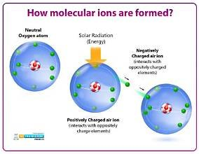

Ion phân tử

Image source: Topic 3 image sources
| Vietnamese | Ion phân tử |
|---|---|
| English | Molecular ion |
| Pronunciation | /məˈlekjələr ˈaɪən/ |
| Word type | Danh từ (n.) |
Meaning (Vietnamese)
Ion phân tử
Meaning (English)
An ion formed from a molecule without losing any of its atoms.
Example
The molecular ion can provide information about molecular mass.
Ion phân tử có thể cung cấp thông tin về phân tử khối.
Another definition from the notes
Ion được hình thành từ một phân tử mà không mất đi nguyên tử nào
An ion formed from a molecule without losing any of its atoms
Source of information: Topic 3 notes (see Sources)